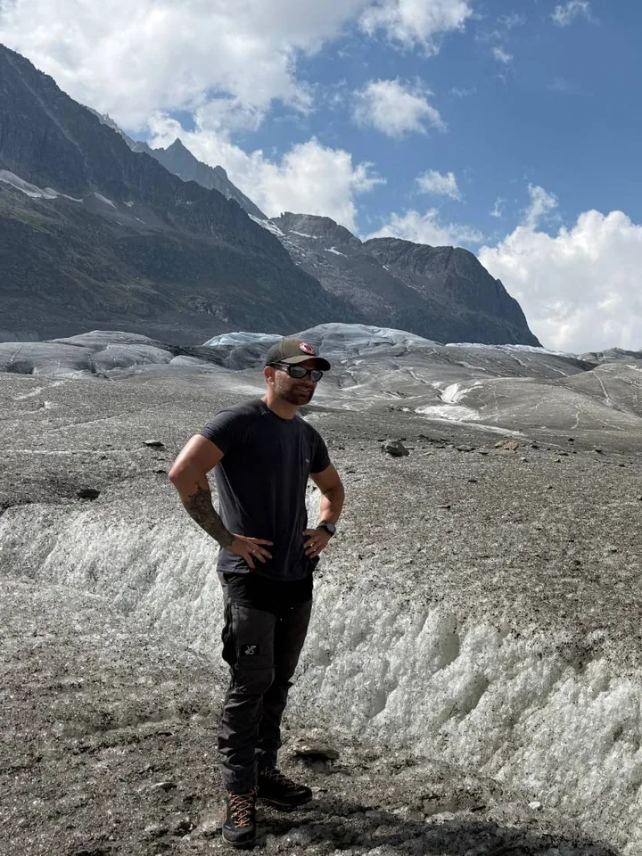

About me

Hi, I'm Youri: 38 years old, from the Netherlands, and working in IT. As a hiker, mountain sports enthusiast and nature lover, the Alps are where I love to be.
Of everything you find there, nothing impresses me more than the glaciers. Mountains of ice, in places hundreds of metres thick. Over long ice ages, glaciers carved the valleys we hike through today, and the ice itself holds our history, locked inside it layer by layer.
In 2021 I stood at the Aletsch Glacier for the first time, and the ice and the landscape left a deep impression on me. In 2025 I was back. Again I was struck by the beauty of the landscape, but this time something else caught my attention: the ice was gone in places where, four years earlier, it had towered metres above my head. In some spots only bare rock was left.
Why I made this map
2026 was another extreme year. Switzerland's glaciers lost 5.5 % of their remaining ice volume in a single year, and for the Grosser Aletschgletscher and the Rhonegletscher it was the most negative year since their measurements began (GLAMOS, 2026). It saddens me.
As a pilot project, I wanted to show what the rest of this century may look like. This map brings published scientific research and open data together: combined, modelled and interpolated into one interactive 3D map of the 250 largest glaciers in the Alps. Every number on the map can be traced back to its source; About the data explains which sources were used and how.
The conclusion is the same in every scenario: the ice in the Alps will decline dramatically and become a rarity. For me, there is no clearer signal of climate change than this slow disaster unfolding before our eyes.
The Melting Alps is a personal, non-commercial project.
Contact
Questions, ideas, or an error in the data? I'd like to hear about it. Email me at themeltingalps@outlook.com.
This site is not affiliated with the researchers or institutions whose data it uses. For questions about a dataset itself, please contact its authors; the sources are listed in About the data.